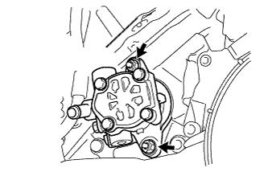
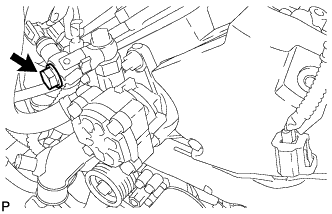
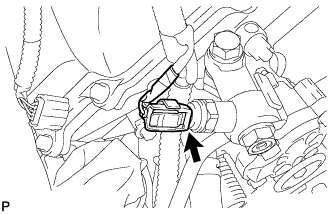
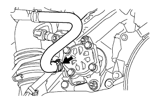

1VD-FTV VANE PUMP > INSTALLATION |
| 1. INSTALL VANE PUMP ASSEMBLY |
 |
Coat a new O-ring with power steering fluid and install it to the vane pump.
Install the vane pump with the 2 nuts.
| 2. CONNECT PRESSURE FEED TUBE ASSEMBLY |
 |
Install a new gasket to the pressure feed tube.
Install the pressure feed tube and union with the union bolt.
| 3. CONNECT POWER STEERING OIL PRESSURE SWITCH CONNECTOR |
 |
Connect the connector.
| 4. CONNECT NO. 1 OIL RESERVOIR TO PUMP HOSE |
 |
Connect the pump hose to the vane pump with the clip.
| 5. INSTALL V-RIBBED BELT |
 |
Attach a wrench to the V-ribbed belt tensioner bracket and turn the wrench clockwise.
 |
Install the V-ribbed belt as shown in the illustration.
 |
Check that the belt fits properly in the ribbed grooves.
| 6. INSTALL NO. 3 IDLER PULLEY (w/ Viscous Heater) |
 |
Align the No. 3 idler pulley bracket knock pin and No. 1 idler pulley bracket knock pin hole and install the No. 3 idler pulley with the nut.
| 7. INSTALL NO. 1 IDLER PULLEY (w/ Viscous Heater) |
 |
Install the collar, No. 1 idler pulley and cover with the bolt.
| 8. INSTALL V-RIBBED BELT (w/ Viscous Heater) |
 |
Install the V-ribbed belt as shown in the illustration.
 |
Temporarily install the lock nut, and turn the bolt clockwise.
 |
Using a belt tension gauge, adjust belt tension.
| Item | Specified Condition |
| New belt | 400 to 650 N (41 to 66 kgf, 89.9 to 146.1 lbf) |
| Used belt | 300 to 500 N (31 to 51 kgf, 67.4 to 112.4 lbf) |
 |
Tighten the nut.
|
Check that the belt fits properly in the ribbed grooves.
| 9. INSTALL RADIATOR RESERVOIR ASSEMBLY |
 |
Install the radiator reservoir with the 3 bolts.
Connect the 2 hoses to the upper radiator tank and water inlet.
| 10. INSTALL INTAKE AIR CONNECTOR |
 |
Connect the intake air connector to the No. 1 and No. 2 air cleaner pipes.
Install the connector with the 2 bolts.
Tighten the 2 hose clamps.
 |
Attach the 3 wire harness clamps.
w/o Viscous Heater:
Connect the connector to the water temperature sensor.
w/ Viscous Heater:
Connect the 2 connectors to the water temperature sensor and viscous with magnet clutch heater.
| 11. TEMPORARILY INSTALL NO. 1 AIR CLEANER HOSE |
 |
Temporarily install the air cleaner hose to the intake air connector.
| 12. INSTALL AIR CLEANER CAP SUB-ASSEMBLY |
 |
Connect the air cleaner cap to the air cleaner hose, and install the air cleaner cap with the 4 clamps.
Connect the mass air flow meter connector and attach the wire harness clamp to the air cleaner cap.
Attach the wire harness clamp.
 |
Align the protrusion of air cleaner cap and concave portion of air cleaner hose.
Tighten the 2 hose clamps.
| 13. INSTALL NO. 1 ENGINE COVER SUB-ASSEMBLY |
 |
Install the engine cover with the 2 nuts.
| 14. INSTALL UPPER RADIATOR SUPPORT SEAL |
 |
Install the upper radiator support seal with the 7 clips.
| 15. INSTALL FRONT FENDER APRON SEAL FRONT RH |
 |
Install the front fender apron seal front RH with the 3 clips.
| 16. ADD POWER STEERING FLUID |
| 17. BLEED POWER STEERING FLUID |
| 18. INSPECT FOR POWER STEERING FLUID LEAK |
| 19. CONNECT CABLE TO NEGATIVE BATTERY TERMINAL |